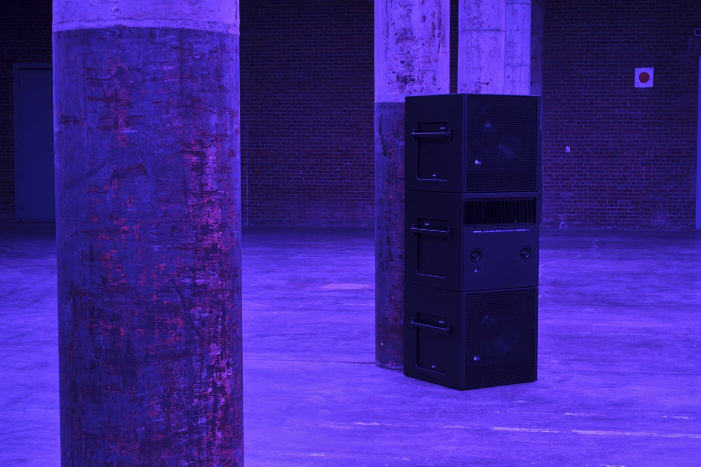
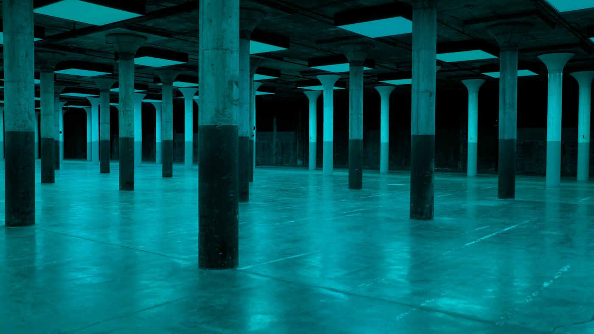
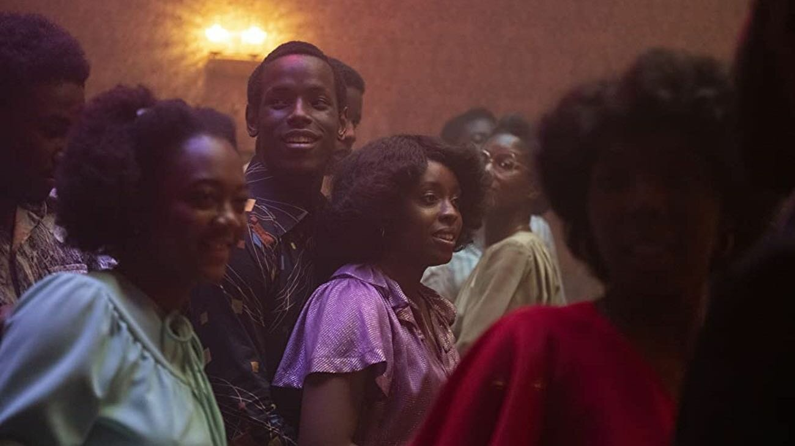

Steve McQueen, Bass, 2024. Installation view, Dia Beacon, New York, May 12, 2024–April 14, 2025. © Steve McQueen. Photograph by Bill Jacobson Studio, New York.
ON SOURCE: MUBI NOTEBOOK
Lower Frequencies: Steve McQueen’s “Bass” as “Cinematic Space”
The filmmaker’s latest work is not just a sculpture or an installation but a continuation of his version of expanded cinema.
Madeleine Seidel 09 Aug 2024
“The point now is that I found a home—or a hole in the ground, as you will.”1
Upstate New York’s Dia Beacon is surrounded by bucolic scenery, but beneath the post-industrial campus of the art institution, there is a hole. A blank slate enveloped in cool darkness, a palatial underground expanse of concrete, the subterranean gallery has hosted a number of site-specific installations by artists such as Joan Jonas, Carl Craig, and now British artist and filmmaker Steve McQueen, whose Bass is on view through next spring.
Bass is a beguiling, confrontational work: over the course of its approximately 40-minute runtime, there is no dialogue, no moving image, and no semblance of a traditional narrative—things one might expect from an artist whose film projects, including Hunger (2008), 12 Years A Slave (2013), and Small Axe(2020), have found both critical acclaim and commercial success. What is left, then, is cinema pared down to its most essential elements of light and sound, a masterful consideration of cinematic grammar that results in a powerful repudiation of empire and its attending aesthetics.

Steve McQueen, Bass(detail), 2024. © Steve McQueen. Photograph by Don Stahl.
“There is a certain acoustical deadness in my hole, and when I have music, I want to feel its vibration, not only with my ear but with my whole body.”
At its formal core, Bass is a literal manifestation of sound and light, the very building blocks of cinema. In the dark of the Dia basement, sixty light monitors are affixed to the ceiling, slowly changing color through the full spectrum of visible light—from sunset reds to shades of magentas, royal blues, teal-greens, and golden ochres before the cycle repeats. At times, the changes are so subtle as to be imperceptible, an unsettling effect that warps one’s perception of time passing. From the hulking loudspeakers placed on the factory floor and at the top of the space’s columns, a soundtrack composed by a quintet of acclaimed musicians—Meshell Ndegeocello, Marcus Miller, Aston Barrett Jr., Mamadou Kouyaté, and Laura-Simone Martin—plays on loop with various electronic and acoustic bass instruments, including the traditional West African ngoni, taking turns to echo through the expanse.
McQueen has transformed this gallery into a space that feels akin to the illuminated hovel occupied by the titular protagonist of Ralph Ellison’s Invisible Man (1952): a man-made cave whose darkness is kept at bay by electricity siphoned from the municipal power company. One’s experience in the depths of Bassis a reflection of light and sound’s ability to severely alter bodily sensation: the perception of skin under colored lights, the brain-rattling hum of the deep soundwaves, the pure endurance of existing in a space that is hypnotic and hostile in equal measure. The rarity of this type of installation—one that demands its audience to surrender themselves to it—makes its categorization difficult. Early previews of the work noted the singularity of McQueen’s “site-responsive”2 and “immersive environment,” positioning it as an “unclassifiable” departure from his moving-image work.3 Placing Bass outside of McQueen’s canon, though, is a critical error. This is not just a work of sculpture or installation, but a continuation of McQueen’s version of expanded cinema—a new language of moving image required to repudiate the harm done by representations of Blackness and the violence inherent to those images.
To consider cinema spatially is hardly new, not to McQueen nor the worlds of art and cinema at large. His influences as a young filmmaker were not just Michelangelo Antonioni, Jean Vigo, and the French New Wave, but also more recent figures such as Isaac Julien, Bruce Nauman, and Derek Jarman, artists who approached video in an expansive manner. Expanded cinema—a loose, purposefully nebulous category first proposed by critic Gene Youngblood’s eponymous book in 1970—is a mode in which filmmakers think outside of the frame, incorporating live performance, multiple screens, and advanced technologies into their work. Early practitioners included titans of avant-garde film and performance such as Stan VanDerBeek, Carolee Schneemann, Michael Snow, and Stan Brakhage, and these journeys to the very far reaches of cinema’s possibility cemented new media and the moving image as critical mediums in contemporary art.
Long before McQueen’s Hollywood success, the Londoner was known primarily as an acclaimed video artist whose works could be seen at Documenta and the 2009 and 2015 Venice Biennales. The immersive nature of even his earliest videos suggested future work that would include space outside of the frame. Deadpan(1997), created a few years after his graduation from art school, sees McQueen interacting with a crumbling structure that references the “anarchitecture” of conceptual artist Gordon Matta-Clark and the slapstick humor of Buster Keaton. Western Deep (2002) is a claustrophobic piece of experimental documentary, capturing the physical strain on South African miners’ bodies by plunging the viewer into darkness. As his renown grew, McQueen included architectural flourishes in his exhibition design, creating immersive spaces in which to view his work. Recalling his 2016 installation at the Whitney Museum of American Art, curator Donna DeSalvo—also the curator of Bass—says that upon seeing the empty museum gallery that would hold his work, McQueen remarked that it was “a cinematic space.”

Steve McQueen, Bass, 2024. Installation view, Dia Beacon, New York, May 12, 2024–April 14, 2025. © Steve McQueen. Photograph by Dan Wolfe.
“Perhaps you’ll think it strange that an invisible man should need light, desire light, love light. But maybe it is exactly because I am invisible. Light confirms my reality, gives birth to my form.”
In Bass,the basic elements of the moving image are a means of embodiment: visitors negotiate their proximity to and experience of the work by way of the senses, collapsing easy distinctions between viewer and active participant. In her catalog essay for McQueen’s 2014 solo exhibition at Espace Louis Vuitton, in Tokyo, critic and curator Jean Fisher remarked on the “violent assault on our senses” that defines McQueen’s video work. She continues that this “intensity…insists on proximity even as it remains at a distance, a force that both draws us into the image even as we draw it into ourselves.”4
Across McQueen’s work, bodies are shaped by light and sound. Two early works—Girls, Tricky (2001) and Charlotte (2004)—are close-up portraits of artists that purposefully subvert their respective public images. In a more self-reflexive mode, Illuminer (2001) shows McQueen himself shrouded in darkness. At a fixed angle, a camera captures him in a dark Paris hotel room lounging nude on an unmade bed. The only light in the room is that of the television, which silhouettes McQueen’s otherwise unintelligible frame against the crumpled bedsheets. The program is a French-language news report on the deployment of American soldiers in Afghanistan; gunshots and explosions punctuate the journalist’s commentary while McQueen watches with an uneasy stillness.
Just as McQueen finds his own corporeal form in the fluorescent glow of the television screen, he subjects the audience to the same treatment in Bass. It is impossible to view the work without entering the basement room, making one’s bodily experience paramount: How does your skin color shift in the light? What sonic intricacies do you hear in the score? Or even, who else is occupying this space? In the absence of a traditional screen, the “cinematic space” of Bass makes its viewers the subjects; like their filmic counterparts across McQueen’s oeuvre, their existence is mediated by his inversion of cinema’s formal building blocks.
Steve McQueen, Bass(detail), 2024. © Steve McQueen. Photograph by Don Stahl.
“Who knows but that, on the lower frequencies, I speak for you?”
McQueen’s abandonment of the literal image in Bass speaks to both the failure and possibility of the image, suggesting a mode of working that explores the Black experience without the implicit racism so often present in representations of Black subjects. As the summer 2020 Black Lives Matter uprisings—and the resulting promises of solidarity and legal reform—began to recede from national conversation, scholar Rizvana Bradley published the essay “Picturing Catastrophe: The Visual Politics of Racial Reckoning” in the summer 2021 issue of the Yale Review. Surveying the role of imagery—particularly, that of Black suffering and death circulated by white viewers—in the protests following the murders of George Floyd, Breonna Taylor, and so many others, Bradley argues that virulently anti-Black violence is at the heart of the emergent calls to witness:
Indeed, the manner in which the liberal face of empire has scrambled to exploit the politics of representation this past year betrays a latent desperation as much as an appetite for extraction; what else are we to make of this demand to look, again and again, upon the brutalized flesh of blackness? To look, so that a picture of the world might be preserved, so that the world might be saved—from itself, for itself.5
In this ouroboros of the visual age—where visualizing systemic violence as a means of advocacy only begets more systematic violence and trauma—what is the solution for a reality in which “Black people are held hostage by the visual”?6 Bradley continues her exploration of Black representation in her 2023 book Anteaesthetics: Black Aesthesis and the Critique of Form in which she proposesa new grammar of images, one unencumbered by “the metaphysics of the [anti-Black] world” and its demands for literal representations of Blackness and the suffering to which Black people are so often objected.7
McQueen’s storytelling in Hollywood and in the art world has placed him on both sides of this aesthetic divide, using formally constructed images to show both the ecstasy and abject pain of Blackness. Let us consider McQueen’s two most critically acclaimed films: 12 Years A Slave and Lover’s Rock, the second installment of Small Axe. Both films feature two virtuosic scenes that shape the physical and psychological experience of Blackness through time using the device of the extended take: one shows sensual, palpable joy and the other unbearable suffering and violence.

Lover's Rock(2020, Steve McQueen).
Lover’s Rock centers on a single evening in 1970s London, where young Black Britons—many of them first- or second-generation Caribbean immigrants—retreated to semi-legal house parties to avoid the rampant racism that barred them from other clubs in the city. At the climax of one such party, the DJ plays Janet Kay’s “Silly Games” (1979), causing the house to erupt in dance to the saccharine, lovelorn tune until the track’s end, where the partygoers extend the good times by singing the entire song again without the backing track. Also foregrounding sound, one of 12 Years A Slave’s most terrifying scenes is a prolonged and extended near-lynching in which the film’s protagonist, Solomon Northrup, is hanged from a Spanish Oak and forced to stay alive by balancing on his toes. For a nearly unbroken take, Northrup struggles to breathe, and despite the camera’s relative distance from the character, his labored gasps ring out nearly as loudly as the cicadas humming in the background. In her acclaimed 2016 book, In the Wake: On Blackness and Being, theorist and cultural critic Christina Sharpe analyzed this scene, calling into question the ethics of picturing brutality on film in such a direct and extended manner in relation to another 19th-century epic, Julie Dash’s Daughters of the Dust (1991):
[12] Years a Slave is a film that Steve McQueen has said “is about love” and that his work here, “is about keeping the tension.” He continues, “I love the idea of just being in real time, being present, being there. I’m a filmmaker, so I always think: ‘When is the breaking point? When is long enough?’”… [We] might ask where and when is the breaking point in [12 Years], or for that matter in most contemporary films in the West, in their representations of Black suffering… Where is the breaking point, the breath, the pause where the circulation, production, and reception of images of Black suffering and, importantly, the pleasure in them are concerned? The long time/the long shot, the residence time of Black life always on the verge of and in death, goes on.8
In the years since In the Wake’s publication, McQueen has evoked the work of Sharpe and this text: in an interview with the New York Times’s Siddhartha Mitter ahead of Bass’s public opening, he references the theorist’s argument that Black people exist in “the wake,” defined as “the continuous and changing present of slavery’s as yet unresolved unfolding.”9 Although reluctant to attach a particular sociopolitical meaning toBass, McQueen notes a preoccupation with the experience of the Middle Passage—the drawn-out psychological terror and dehumanization that occurs when one is severed from their homeland, a continuing violence that, in his words, makes Black people “in some ways a post-apocalypse people.”10 A continuation of Sharpe’s theory, Basscan be read as the hold of a ship on the Middle Passage, a liminal space where one’s fate was unknown, outside of the promise of abject misery and enslavement. It is a symbol of a physical and mental journey so punishing—so outside of time and human understanding—that literal representation cannot address its horrors.
If Bass is a corrective to the graphic imagery of anti-Black violence—seen in McQueen’s own work, other mainstream filmmaking, and the way such violence is disseminated to the masses—then this cinematic space’s inescapable hostilities and illusions become a place for reflection and embodiment. As a work of expanded cinema, Bassenraptures the audience and places them in limbo—able to render a history of survival through physical phenomena without perpetuating the anti-Black violence of the image. At Dia Beacon, McQueen is the Invisible Man, burrowing underground to be seen amidst indescribable darkness.
- All epigraphs are excerpted from Ralph Ellison, The Invisible Man(New York: Random House, 1952). ↩
- Donna DeSalvo with Emily Markert, “Steve McQueen,” Dia Art Foundation, May 8, 2024. ↩
- Siddhartha Mitter, “Steve McQueen, on a Different Wavelength,” New York Times, May 10, 2024. ↩
- Jean Fisher, “Steve McQueen’s Dialogues with the Image of Precarious Life,” Steve McQueen(Tokyo: Espace Louis Vuitton, 2014), 11. ↩
- Rizvana Bradley, “Picturing Catastrophe: The Visual Politics of Racial Reckoning,” Yale Review, Summer 2021. ↩
- Bradley, “Picturing Catastrophe: The Visual Politics of Racial Reckoning.” ↩
- Rizvana Bradley, Anteaesthetics: Black Aesthetics and a Critique of Form(Redwood City, CA: Stanford University Press, 2023), 2. ↩
- Christina Sharpe, In the Wake: On Blackness and Being (Durham: Duke University Press, 2016), 126-127. ↩
- Sharpe, 13-14. ↩
- Mitter, “Steve McQueen, on a Different Wavelength.” ↩
ON SOURCE: MUBI NOTEBOOK